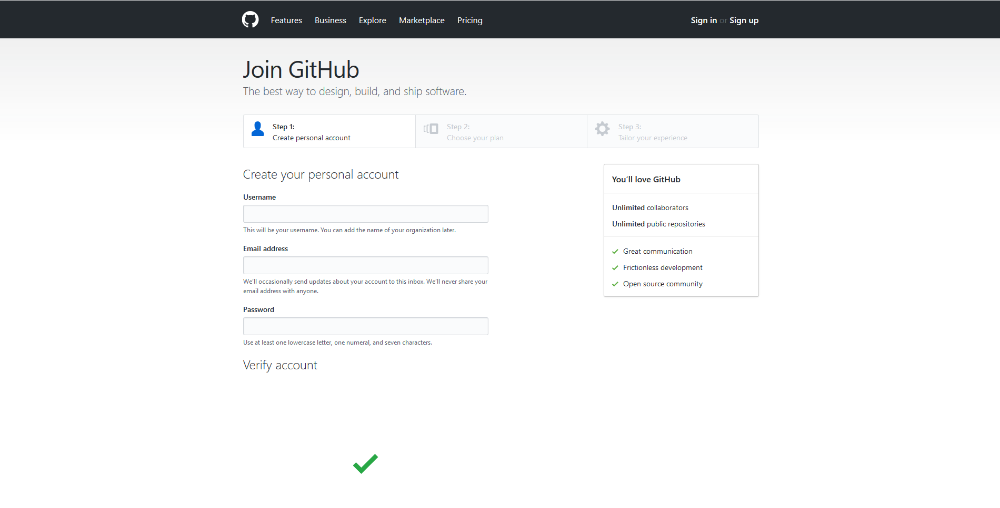
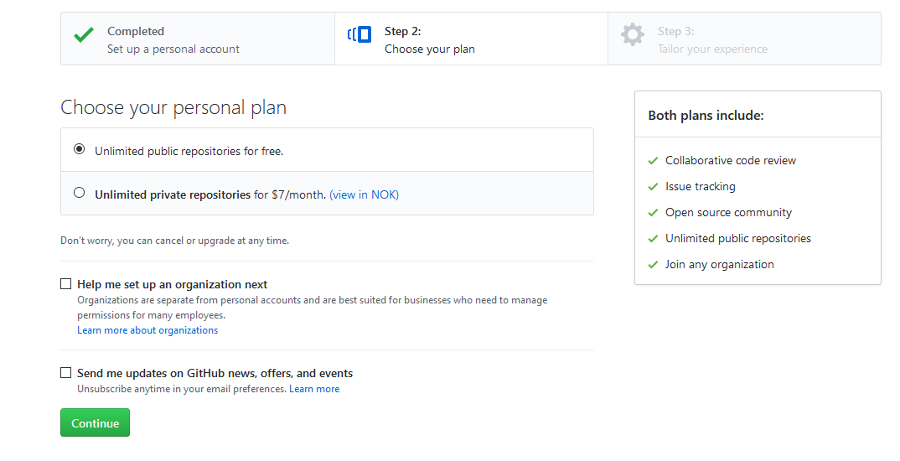
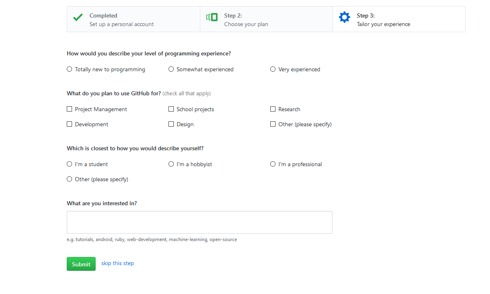

For å kunne publisere en nettisde ved hjelp av GitHub, må du ha din egen bruker.
For å lage din egen bruker, kan du klikke her
eller gå til: https://github.com/join?source=header-home
Siden du nå har kommet inn på vil se ut som dette:

Når du har kommet inn på denne nettsiden, må du skrive inn et brukernavn, din email-adresse og et passord som du ønsker å bruke.
Etter dette må du trykke på Create an account for å komme videre.
Neste side du har kommet til vil se ut som dette:

Her kan du velge om du ønsker å ha GitHub graits, eller om du ønsker å betale for å få flere fordeler.
Om du ikke har behov for private oppbevaringssteder, kan du trykke på Continue.
Den siste siden du kommer til når du lager deg en bruker vil se ut som dette:

Her kan du legge til mer informasjon om deg selv, eller bare hoppe over dette om du ikke ønsker å legge til mer info.
Når du er ferdig, kan du trykke på Submit.